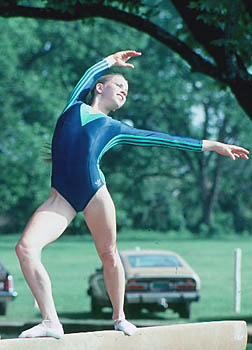

Kathy Johnson (USA)
1978 World FX Bronze Medalist
1984 Olympic
B Bronze Medalist

Medal Total
Olympic Games: 1 Silver, 1
Bronze
World Championships: 1
Bronze
World Cup: 1 Bronze
Kathy was born on September 13, 1959. Her
international career spanned eight years. Her balletic floor exercises
were a favorite of both the judges and audience. She was a commentator for
ABC Sports for several years. Kathy is married to actor Brian
Clarke. They have a son, Patrick.
Competition Results
- 1975
- AAU Sr. Nationals: 42nd AA
-
- 1976
- US Championships: 23rd AA
- US Olympic Trials: 12th AA
-
- 1977
- American Cup: 1st AA
- 1st Elite Nationals: 1st AA, 1st V, 1st B, 1st
FX
- NHK Cup: 2nd AA
- US Championships: 2nd AA, 1st FX, 3rd UB
-
- 1978
- American Cup: 2nd AA
- International Champs. of Romania: 5th AA, 2nd V, 2nd FX, 3rd UB, 3rd B
USA-JPN Dual Meet: 1st Team, 1st AA
US Championships: 1st AA
- US World Trials: 4th AA
- World Championships (Strasbourg): 5th Team, 8th AA, 3rd
FX
- World Cup: 14th AA, 3rd FX, 7th V
-
- 1979
- AAU Sr. Nationals: 2nd AA
- Champions All: 4th AA
- National Sports Festival: 8th AA
- US Championships: 4th AA, 2nd B
- US World Trials: 6th AA
- World Championships (Ft. Worth): 6th Team, 18th AA
(prelims)
- World Cup: 6th AA, 6th V, 6th UB, 7th FX
-
- 1980
- HUN International: 5th AA
- US Olympic Festival: 2nd AA
- US Olympic Trials: 2nd AA
-
- 1981
- Albequerque Journal Intl. Invitational: 3rd AA
- All-American Classic: 6th AA
- Champions All: 2nd AA
- Intl. Mixed Pairs: 2nd Team
- US Championships: 2nd AA
- US World Trials: 8th AA
- USA-FRG Dual Meet: 1st Team, 2nd AA
- World Championships (Moscow): 6th Team, 15th AA
-
- 1982
- American Classic: 2nd AA
- Emerald Empire Cup: 3rd AA, 2nd FX, 4th V, 5th UB
- US Classic: 3rd AA
- US Championships: 8th AA, 3rd V, 4th B
- USA-JPN Dual Meet: 1st Team, 1st AA, 1st UB
- USA-USSR Dual Meet: 2nd Team, 2nd AA
- USGF Intl. Invitational: 1st Team, 1st AA, 1st B
-
- 1983
- US Classic: 3rd AA
- US Championships: 5th AA, 2nd B, 5th UB
- USA-USSR Dual Meet: 1st Team, 11th AA
- World Championships: 7th Team, 11th AA, 8th
FX
-
- 1984
- American Classic: 2nd AA
- American Cup: 5th AA (prelims)
- Caesar's Palace Invitational: 9th AA
- Olympic Games: 2nd Team, 10th AA, 3rd
B
- US Classic: 2nd FX, 5th B, 6th UB
- US Championships: 6th AA, 3rd B, 4th V, 7th FX
- US Olympic Trials: 8th AA
- USA-CAN Dual Meet: 1st Team, 3rd AA
- USA-CHN Dual Meet: 6th AA
This page was created on July 3, 1999 and was
last updated on August 23, 2013.
© Gymn Forum